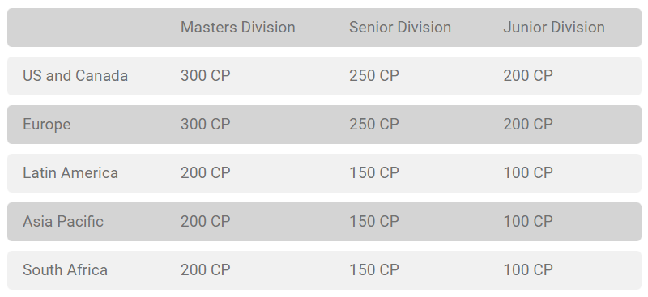

Aug 21 - 23
Boston, MA USA

2015 World Championships
BW: Boundaries Crossed - XY: Roaring Skies

Hynes Convention Center
900 Boylston St
• The 2015 Pokemon World Championships took place in Boston, massachusetts for the first time ever. It was a three day event, where anyone who met the Championship Point threshold was invited to play in Day 1 on Friday. Of which consisted of 7 Rounds, anyone with a record of 4-0-3, or 5 wins, moved on to Day 2.
• Day 2 (Saturday) consisted of the above players that made it through a rough Day 1, as well as the Top X players from throughout the season, seperated by region, found below. Day 2 was also 7 Rounds long, but resulting in a Top 8 Cut. All Top 8 and Top 4 matches were played out that night, saving each division's Grand Finals for Sunday.
• This event was the first Worlds that didn't include a Last Chance Qualifier in 8 years. Each World Championships from 2007 - 2014 had an LCQ.
Championship Point Threshold
Prizing:
• 1st Place
$25,000
• 2nd Place
$15,000
• Top 4
$7,500
• Top 8
$5,000
• Top 16
$2,500
• Top 32
$1,500
(The Top 4 finishers recieved an automatic invitation to the 2017 World Championships.)
Automatic Day 2 Invites
US & Canada Day 2 Invitees
- Chase Moloney
- Jason Klaczynski
- Dylan Bryan
- Kristy Britton
- Grant Manley
- Andrew Estrada
- Brandon Cantu
- Sam Chen
- Frank Diaz
- Ryan Sabelhaus
- Kyle Haverland
- Brit Pybas
- Kevin Baxter
- Kian Amini
- Maximillian Armitage
- Chris Collins
Europe Day 2 Invitees
- Martin Janouš
- Simon Eriksen
- Niklas Lehnert-Rappel
- Tommi Lahtela
- Patrick Landis
- Mees Brenninkmeijer
- Tord Reklev
- Paulo Silva
- Igor Costa
- Alex Dao
- Patrik Räty
- Lukas Peer
- Steffen Eriksen
- Tristan Wagner
- Søren Lau
- manukeriemis
- Benjamin P
- Luca Schuster
- Simone Zucchelli
- Emanuel da Silva
- Gawein Wagner
- Ryan Moorhouse
Latin America Day 2 Invitees
- Sebastian Lugo
- Nicolas Galaz
- Diego Cassiraga
- Erick341
- Miguel Bernal
- Christian Cruz
- Gabriel Pino
- Aroon Salum
Oceania Day 2 Invitees
- Tito Santoso
- Adrian Velasco
- Jit Min Lim
- Andrew Tandianus
- Jordan Palmer
- Marcus Raj
- Jason Kah Meng
- Suspended Player
Prizing:
Host:
Jonathan Indovino (ShadyPenguin)
Cast:
Kyle (Pooka) Sucevich

Josh (JWittz) Wittenkeller

Kenny Wisdom

Josue Rojano

Host:
Jonathan Indovino (ShadyPenguin)
TCG Casters:
Kyle (Pooka) Sucevich
Josh (JWittz) Wittenkeller
Kenny Wisdom
Josue Rojano